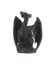

Material Grimoire
Candle

Dragon CandleCandles are essential ingredients in many spells, symbolizing both the fire element and spirit, the energizing force that activates spells and rituals.
A candle conveys light in the darkness in a way a lightbulb never can. It represents fire as a benevolent force, and a candle made of beeswax is more powerful still, since wax is made by a magickal creature, the bee.
History
The use of candles as a common magickal ingredient is relatively recent. Until modern times, real candles were very expensive, which explains the early popularity of lamp magick. Beeswax was dangerous to obtain, and natural plant waxes required intensive labor to produce. The earliest use of what could be called a candle dates to approximately 3000 BCE.
The first true candles combined a wick with wax, oil, or fat that solidified at room temperature, distinguishing them from the more ancient and common oil lamps. Beeswax was a luxury item, as rare in its way as sandalwood and frankincense. The most common candle material until the development of paraffin was tallow (animal fat), a household item with the downside of a strong aroma. Tallow candles remain popular in some Latin American magickal traditions and can often be found at spiritual supply stores.
Materials
Today, candle magick has become one of the most popular forms of spell-casting due to the prevalence of inexpensive candles. Modern candles are most commonly formed from paraffin, a petroleum wax. Natural alternatives include beeswax, bayberry, and candelilla. These natural waxes are inherently more powerful and benevolent than paraffin, though they are considerably more expensive. Those who burn candles extensively may find the cost prohibitive, and those who prefer figure candles may struggle to find them formed from finer waxes.
The Power of Candle Magick
Beyond their elemental symbolism, candles provide a focal point for attention, helping to still the mind during spellwork. Their soft, flickering light creates an ambiance that shifts consciousness out of ordinary existence and into a magickal state.
Colors and Their Uses
Witches usually keep a supply of candles in a range of colors on hand. Colors hold symbolic meanings and affect us psychologically and emotionally, making them powerful tools in spellwork:
- Red or Pink: Love spells, representing passion, affection, and the heart
- Green, Gold, or Silver: Prosperity spells, the colors of money and abundance
- White: Universal substitute that can replace any color
Some formal rituals involve carefully placing candles in specific spots and moving them according to prescribed patterns to build and direct energy.
Birthday Magick
Most people are familiar with a very simple and popular candle spell: making a wish and blowing out candles on a birthday cake. Because your birthday is a high-energy day aligned with your personal power, this is an excellent time to perform magick spells. The tradition of wishing on birthday candles is folk magick that most people practice without realizing its origins.
Basic Candle Magick Instructions
There are four essential steps before a candle is burned:
- Choose the appropriate candle. Candles come in a variety of shapes, sizes, and colors. Select what is appropriate for the spell. When in doubt, a white candle will substitute for any other. If a candle must be burned in one sitting, a smaller candle may be advisable. If a candle is to be burned incrementally over seven days, a larger candle is the wiser choice.
- Charge the candle. Hold the candle in both hands and focus intently on the desired goal of the spell, directing personal energy into the wax.
- Carve the candle. Using a carving tool, engrave identifying information into the wax: name, mother's name, birthday, astrological sigil, and any other relevant details. A spell may specify exactly what to carve. Visualize that the candle will ultimately vanish, carrying the magickal message to the spirit world. Whatever is intended to be transmitted should be carved into the wax. A carving tool is anything with a sharp point. Because it will transmit personal fears and desires and may retain this as a kind of inner memory, it is advisable to keep carving tools reserved for personal magickal use. A traditional carving tool is a rose thorn, which may be disposed of with the spell remnants.
- Dress the candle. Dressing means anointing the candle with oil, commonly called a "dressing oil." The spell will specify which type of oil to use. The oiled candle may be dressed more elaborately by rolling it in powdered herbs or color-coordinated glitter.
Common Figure Candles
Figure candles are shaped candles available from spiritual supply stores. The following are among the most popular forms and their typical uses.
Cat
- Black: returning hexes, negativity, and evil intent
- Green: good luck, money
- Red: sex and romance
Cross or Crucifix
Available in many colors, though white is most commonly used. Employed as altar candles and in uncrossing rituals.
Devil
- Green: fast cash and debt repayment
- Red: sex spells
- Black: domination spells
Human Figure
Male and female figure candles represent either the practitioner or the target of a spell. They come in a variety of colors that can be coordinated with the spell's purpose or the person they represent. The standard figure candle depicts a single naked male or female. Special situation figure candles include:
- Couple Candle -- a single candle depicting a conjoined man and woman standing side by side in wedding clothes, used for marital, binding, and love spells
- Loving Couple Candle -- a single candle depicting a naked man and woman entwined in embrace, used for romantic and binding spells
- Divorce Candle -- a single candle depicting a conjoined male and female standing back to back, used for divorce and separation spells
Skull
- White: persuasion, communication, uncrossing
- Black: domination, hexing, spell-reversals
Witch
Used for luck, love, and reversing spells, and to invoke the witch's blessing on endeavors.
Seven Knob
- Black: preventing and eliminating personality conflicts, banishing
- Red: romance, emotional matters
- Green: employment, luck, finances
Typically one knob is burned per twenty-four hour period, so that it takes seven days to burn the candle entirely.
Types of Candles
Double Action Candles
These candles feature two colors, usually red and black or green and black, with one column of color stacked atop the other. They are typically burned to increase beneficial forces while dispelling harmful influence. Triple Action Candles follow the same principle with three layers of color.
Reverse Action Candles
Red candles coated with a layer of black wax. Similar in function to Double Action Candles, though some practitioners consider them more powerful. Used to reverse negative spells and send them back to their source.
Seven Day Candles
Designed to burn over approximately a seven-day period, these candles come in many colors and serve virtually any purpose. They are typically encased in a glass sleeve.
To dress a glass-encased Seven Day Candle, drill holes into the top of the candle to insert oil, then sprinkle with herbs and glitter dust.
The basic Seven Day Candle is a single solid color in a clear glass sleeve. Manufacturers also produce versions with decorated sleeves featuring specific designs: a saint or spirit (such as Saint Anthony, Saint Expedite, or the Seven African Powers), with the candle color chosen to coordinate with the depicted spirit. Other sleeves coordinate with spell goals (gambling luck candles in green decorated with dice, cards, and horseshoes) or with specific formula oils (an Uncrossing Candle paired with Uncrossing Oil, for example).
Decorated sleeve candles essentially become spells in themselves. Those dedicated to saints and spirits often have suggested prayers or petitions printed on the back. Many are available across Hindu, Roman Catholic, Santeria, Vodou, and Unofficial Saint traditions.
Custom Sleeves
To create a personalized Seven Day Candle:
- Obtain a Seven Day Candle in the desired color inside a clear sleeve
- Attach the chosen image or a photocopy to the glass using appropriate adhesive
- Decorate with glitter glue or objects suited to the candle's purpose (such as imitation coins for a candle dedicated to Lakshmi)
When a candle has burned down, the glass sleeve can be reserved and refilled with a replacement candle. Simply carve, dress, and slip the new candle into the sleeve.
Reading the Flames
Candle flames provide oracular responses to spells. Observe whether the candle burns with a bright, steady flame or fluctuates between high and low. Speed also matters: some candles burn unusually fast while others are slow. Practitioners who habitually burn standardized figure candles will notice these variations clearly, as candles should theoretically burn at similar rates.
Some common interpretations:
- A bright, steady, healthy flame is invariably considered auspicious
- A candle that burns bright and quick indicates that magickal forces are aligned with the working
- A low, struggling flame does not necessarily mean failure; it indicates the spell is working against significant opposition
- Flames that shoot high suggest the invoked spirit is present
- A very low, dim flame may indicate the presence of ghosts
- Flames that spontaneously extinguish and resist relighting carry their own significance
The patterns made by melting wax may also be interpreted. Any remains, ashes, or bits of wax can hold meaning.
Candle Etiquette
Unless a spell specifies otherwise, it is considered poor metaphysical practice to blow out ritual candles. Instead, pinch them out with the fingers or deprive them of air. Long-stemmed, ornamental snuffers exist for this purpose and may be consecrated to the Archangel Michael, the angel associated with candle magick and fire safety. Alternatively, a fireproof dish may be placed over the flame until it extinguishes.
Moon Magick
Candles are a must-have for many moon witches. Used across a vast array of religious and spiritual traditions for intention setting and prayer, their light echoes the growing luminance of the waxing moon and speaks to the heart of lunar transformation. As the moon moves from dark to full, a candle's steady glow becomes a reflection of that building power. There are many types to choose from depending on your working: votives for simple intention spells, chime candles (short pillar candles) for focused and quick workings, larger pillar or jumbo candles for rituals burned over several nights, and glass-encased candles for slow and steady spellwork. Any of these can be incorporated into moon rituals, dressed with lunar-aligned oils and herbs to amplify your intentions.